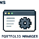

Portfolio Manager → Public portfolioLibrary Manager → Content Library
WEBSITES + CONTENT OPERATIONS
Portfolio Creation and Management
I built the public portfolio and Content Library together with the local applications I use to create, organize, preview, and maintain their content.
Explore portfolio creation and management →